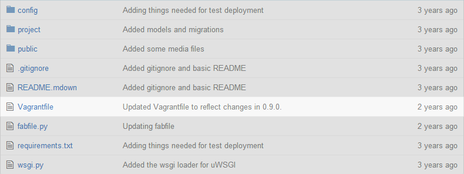

Vagrant
Development Environments Made Easy
Mitchell Hashimoto
DevOps Tools Mad Scientist
- Vagrant
- Packer
For Developers
Vagrant isolates dependencies and their configurations within a single, disposable, and consistent environment.
Infrastructure as Code
The development environment is modeled in code so we can use the same tools and principles as we would for software development.
Vagrantfile
Vagrant
Feature Overview
Let's take a quick look at some Vagrant features.
Vagrant Supports Windows
Vagrant Command-line Workflow
$ vagrant up$ vagrant ssh$ vagrant halt$ vagrant destroy$ vagrant box list$ vagrant box remove ubuntu-dev
Vagrant Demo
For further study:
- http://www.vagrantup.com
- http://docs.vagrantup.com
- http://www.vagrantcloud.com
- Vagrant: Up and Running
- http://about.me/mitchellh